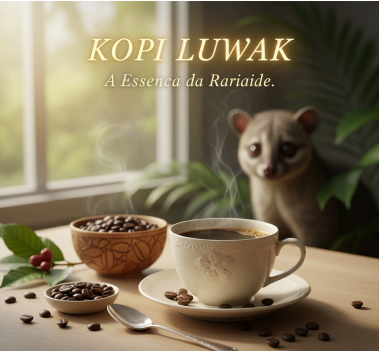

Kopi Luwak
Produzido em Sumatra, Indonésia, o café Kopi Luwak é para poucos: apenas 228g custam R$ 211. Isso porque, além de seu elevado preço, o nome “Luwak” remete a uma espécie de gato herbívoro que habita as florestas da região e come os grãos de café.
